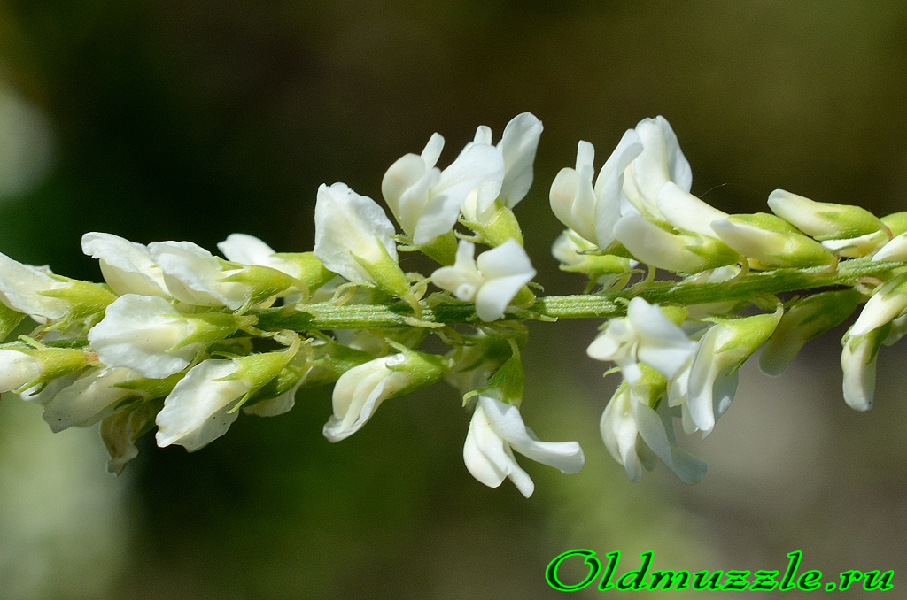
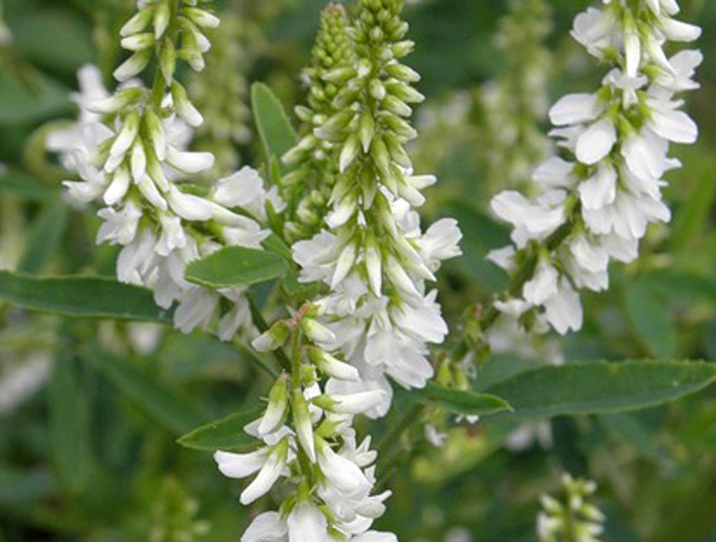
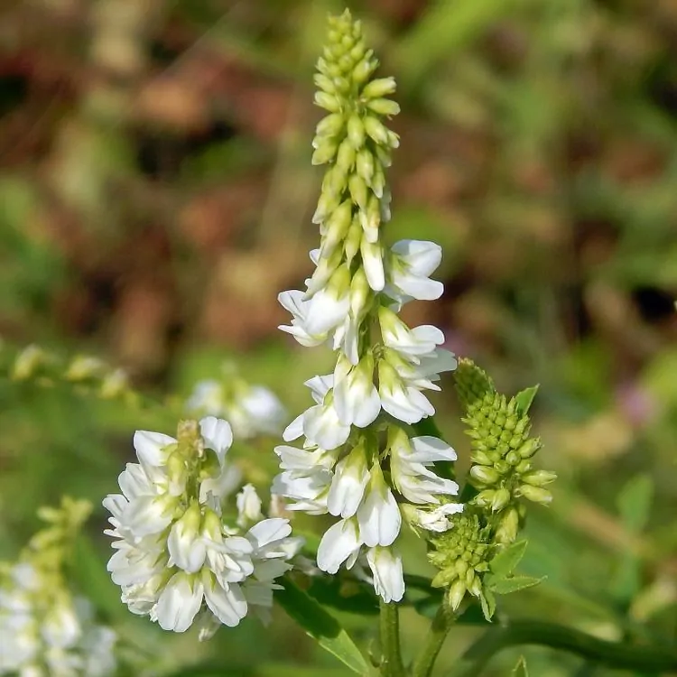

СЕЛЕКЦИОННАЯ ПРОГРАММА
"БЕЛОГОР"
Описание программы "Белогор"
Среди кормовых и сидеральных культур донник белый сорта Белогор выделяется своей неприхотливостью и многофункциональностью. Этот сорт ценится как высокобелковое кормовое растение, пригодное для заготовки сена, сенажа и силоса, а также для выпаса скота. Благодаря мощной корневой системе, проникающей глубоко в почву, донник Белогор эффективно разрыхляет подпахотные горизонты, улучшает водопроницаемость и структурность грунта, одновременно накапливая в корнях и пожнивных остатках большое количество азота. Растение отличается засухоустойчивостью, зимостойкостью и способностью расти даже на засолённых и малоплодородных почвах, выполняя при этом фитосанитарную роль. Длительный период цветения обеспечивает обильный нектаровыделение, что делает этот сорт ценным медоносом, привлекающим пчёл на протяжении всего лета.

Направления селекции:
- Повышение содержания белка в зелёной массе
- Увеличение засухоустойчивости и зимостойкости
- Улучшение кормовых качеств (сенаж, силос, выпас)
- Развитие мощной корневой системы для почвоулучшения
- Сохранение высокой нектарной продуктивности
